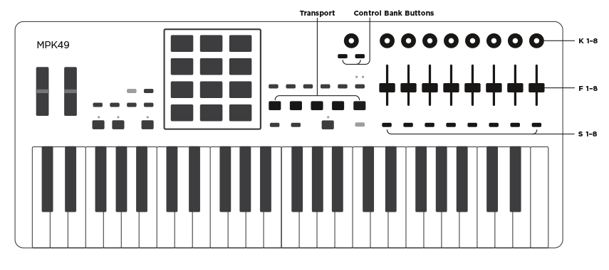

Important note: For the script to work, you need to load the
Bitwig
Studio preset into the MPK49 using the Akai editor.
|
GLOBAL |
| S 1 |
Shift Button |
| S 2 (+shift) |
Next (previous) track |
| S 4 |
Previous preset
|
| S 5 |
Next preset |
| S 6 (+shift) |
Next (previous) presetcategory |
| S 7 (+shift) |
Next (previous) preset creator |
| S 8 (+shift) |
|
|
GLOBAL |
| << (+shift) |
Transport rewind (select previous track) |
| >> (+shift) |
Transport fast forward (select next track) |
| Stop (+shift) |
transport stop (abort automation override) |
| Play (+shift) |
transport play (global back to arrangement) |
| Rec (+shift) |
transport record (arm selected track) |
|
BANK A |
| F 1-8 |
Parameters of the cursor device |
| K 1-8 |
Macros of the primary instrument |
| S3 (+shift) |
Next (previous) parameter page |
|
BANK B |
| F 1-8 |
Volume |
| K 1-8 |
Pan |
| S3 (+shift) |
Previous (next) track bank |
|
BANK C |
| F 1-8 |
send 1 |
| K 1-8 |
send 2 |
| S 3 (+shift) |
previous (next) track bank |